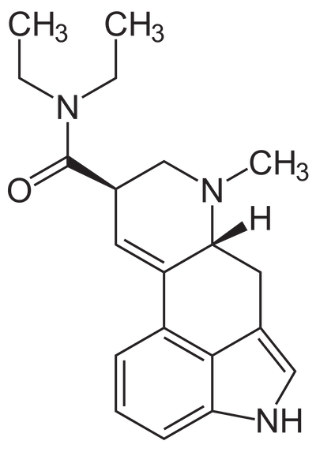

LSD
LSD, short for lysergic acid diethylamide, is a psychedelic drug that has shown to lead to a significant decrease in common anxiety symptoms in the long term, even after only one psychotherapy session (Bui, et al., par. 17).Similarly, another research study documented that 80% of their participants reported improvement regarding their general well-being after their single LSD treatment, with zero record of well-being decrease (Carhart-Harris, et al., par. 9). Moreover, this same study revealed that 65% continued to observe positive changes in their overall mood even fourteen months after their experience (par. 9). The consumption of these hallucinogenic drugs has also been associated with lower rates of suicide and psychological distress in past studies (par. 10). LSD use has also been positively correlated with an increase in optimism and trait of openness at the two-week check point, all while showing no alteration regarding delusional thinking (Carhart-Harris, et al., par. 29). Moreover, the use of psychedelics like LSD has shown to enhance aspects of learning, cognition flexibility, imagination as well as creative thinking (par. 36).

Main benefits: Heightened mood, anxiety relief, increased optimism